Enrollments — CBO
The lifecycle of a single child's enrollment at a CBO site: from a MySchools-originated Draft, through the CBO's Enrollment Manager finishing and submitting it in the vendor portal, to a DOE Enrollment Specialist reviewing and approving it internally — ending with the child officially counted as Active.
Overview
Most enrollments don't start in ECMS at all — they start when a parent accepts a placement offer in MySchools, the public-facing site where NYC families browse and apply for early childhood placements. That acceptance flows straight into ECMS as a Draft enrollment; it's the first domino in the chain. From there, the CBO's Enrollment Manager (a vendor-portal persona, provisioned with the Enrollment Management function — see the Vendor & Site Setup guide) finishes filling out whatever fields MySchools didn't supply and submits it. A DOE Enrollment Specialist then reviews the submission internally and either approves it, rejects it, or sends it back requesting more information. Only once it's approved does the enrollment become Active and the child officially counts as enrolled. This guide continues the running example from the Vendor & Site Setup guide — Cedar Point Early Childhood Academy and its Cedar Point – Riverdale Campus site — for the vendor-portal side, and uses representative Draft/Submitted enrollment records elsewhere in the UAT org to illustrate what those two earlier stages look like, since Riverdale Campus's own enrollments have already progressed past them.
1A parent accepts a placement in MySchools
DO Nothing — this step happens outside ECMS entirely. A parent accepts an offered seat on the MySchools website.
RESULT That acceptance flows into ECMS automatically as a new Enrollment record with Status = Draft. Notice the status path bar at the top of the record: Draft is the very first stage, ahead of Submitted, Information Requested, Rejected, Approved, Active, and Discharged.
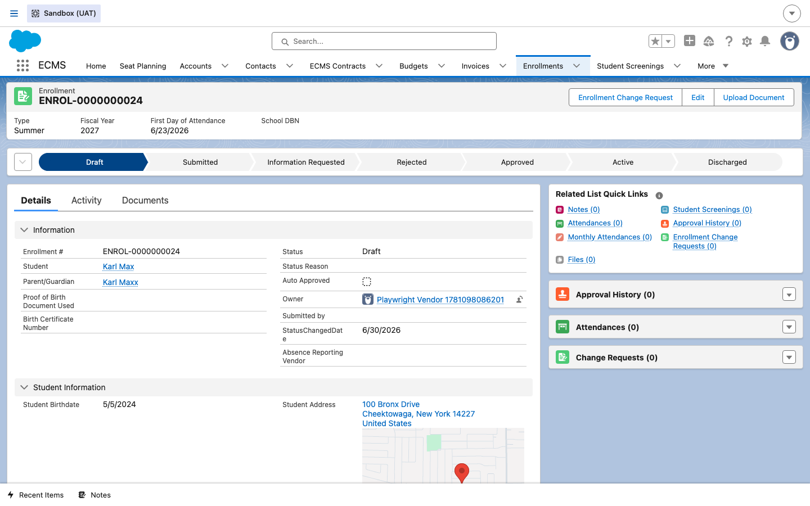
2CBO reviews the portal's Enrollments list
DO Logged into the vendor portal, the CBO's Enrollment Manager clicks Student Enrollments in the top navigation.
RESULT The Enrollments list shows every enrollment scoped to this user's site(s) — here, the four children currently on record at Cedar Point – Riverdale Campus, including Jamal Brooks, whose enrollment we'll follow through to Active later in this guide.
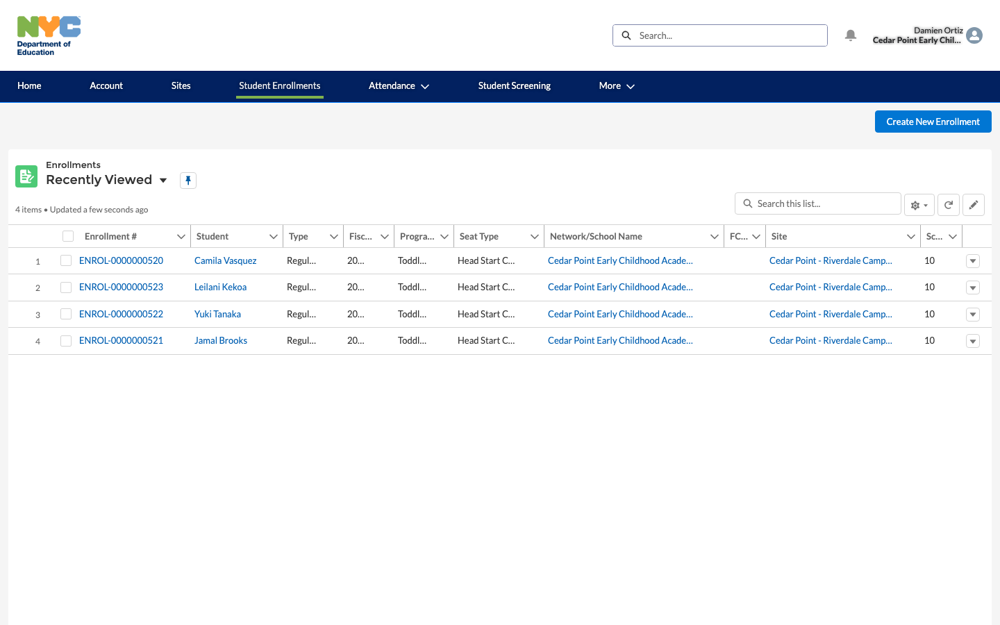
3Finish the remaining enrollment details
DO Click Create New Enrollment (the same form used to both start a new enrollment and finish one MySchools already started) and fill in the student's basic details — First Name, Last Name, Birthdate, Gender — then continue through the remaining sections MySchools didn't already supply.
RESULT The wizard walks the Enrollment Manager through the fields needed before the record can move out of Draft. The screenshot below shows the first screen filled in with illustrative data and was not saved — it's shown here to demonstrate the form itself, not to create a real record.
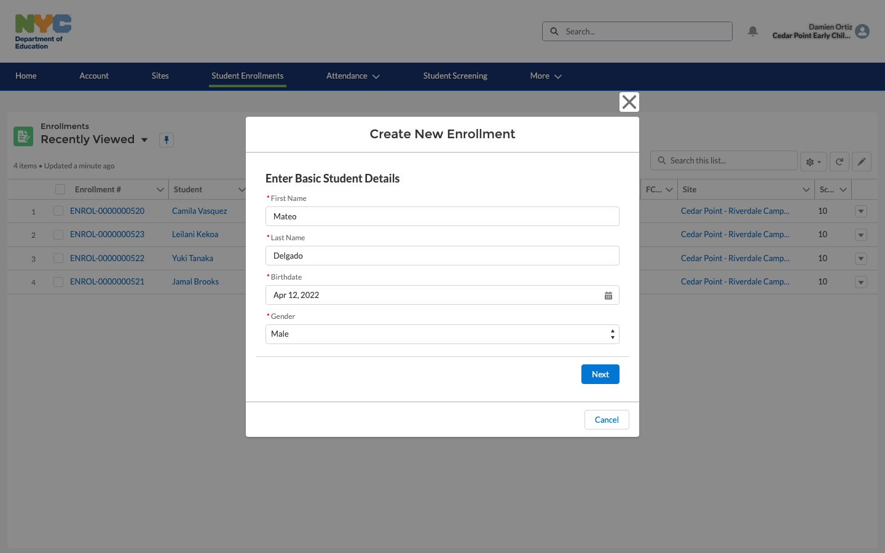
4Submit the enrollment for DOE review
DO Once every required field is complete, the Enrollment Manager clicks Submit Enrollment.
RESULT Status flips from Draft to Submitted; Submitted Date/Time and Submitted by (Vendor) are stamped on the record, and an approval request is automatically created and assigned to the DOE Enrollment Specialists queue.
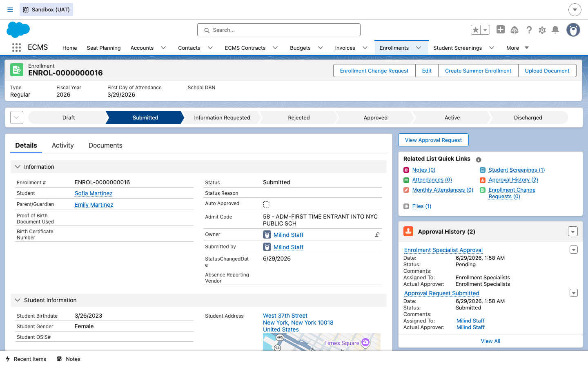
5DOE Enrollment Specialist opens the Submitted queue
DO In the internal app, the Enrollment Specialist opens the Enrollments tab's All Enrollments list view and searches or sorts by Status to find everything currently sitting at Submitted.
RESULT Every enrollment awaiting DOE action across every CBO/FCCN site appears together, regardless of which site or vendor submitted it — this is effectively the Enrollment Specialist's daily review queue.
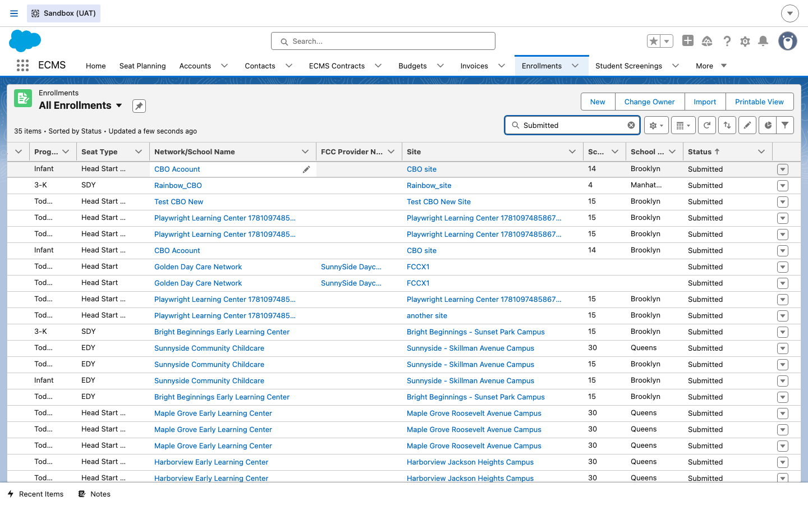
6Review the enrollment before deciding
DO The Enrollment Specialist opens one of the queued records (shown above in Step 4 — ENROL-0000000016, Sofia Martinez) and reviews the student information, site, admission date, and seat type against supporting documentation.
RESULT The record's Approval History related list already shows a pending Enrolment Specialist Approval step, assigned to the Enrollment Specialists queue — this is what the Specialist is acting on.
7Approve the enrollment
DO Once satisfied, the Enrollment Specialist approves the pending approval request (via View Approval Request on the record, or the standard approval actions in their queue).
RESULT Status advances to Active and the child officially counts as enrolled. The example below, ENROL-0000000521 (Jamal Brooks, Cedar Point – Riverdale Campus), shows exactly this end state: submitted by Damien Ortiz, approved by Enrollment Specialist Emma Scott, with the Approval History recording both steps.
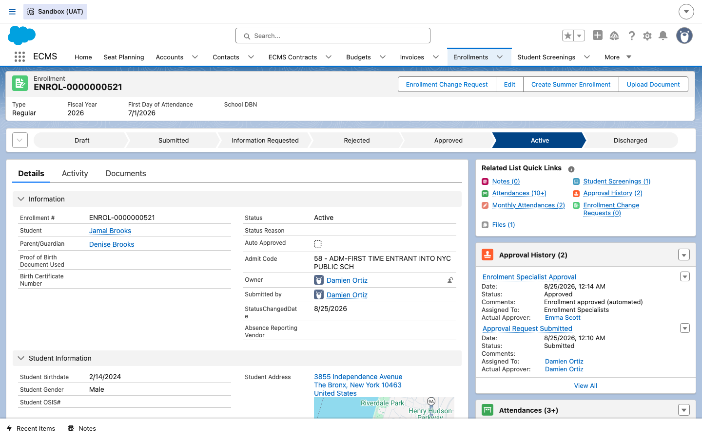
8CBO confirms Active status in the portal
DO Back in the vendor portal, the CBO's Enrollment Manager opens the same enrollment from the Enrollments list.
RESULT The portal shows the identical lifecycle path bar as the internal app, now advanced to Active, along with the child's growing Attendances related list and Student Screenings — confirming from the vendor's own view that the child is fully enrolled and ready for daily attendance to be recorded.
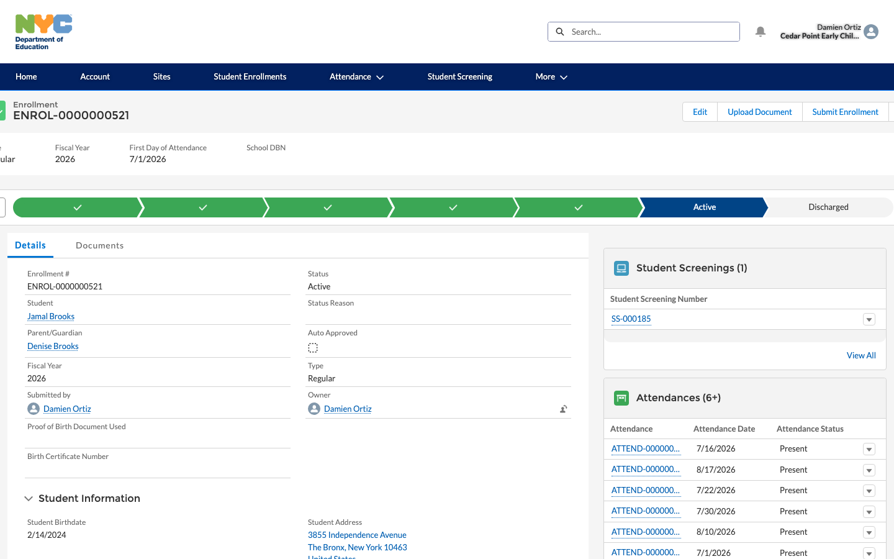
9What happens next
DO Nothing further is required right now — the enrollment is live.
RESULT From here, the CBO records daily Attendance for the child (see the Attendance guide), and the enrollment itself can still be edited, transferred to a different site, or eventually closed out through a formal Discharge — e.g. the child aging out, moving away, or the family deciding to stop — which updates attendance and enrollment records and notifies OASIS, ACCIS, and the other outside systems that track this child so everything stays in sync.
Newer enrollment mechanics (Draft BRD D05.2)
The remaining steps document six features confirmed live in the UAT sandbox that weren't part of the original Draft → Submit → Approve arc above. None of them are CBO/FCCN-specific — the Draft BRD covers them as general enrollment-submission mechanics that apply the same way regardless of vendor type (see Guide 5 for the one-line FCCN cross-reference).
10Registration Packet required before submission
DO On a Draft enrollment, click Upload Document in the record's action bar.
RESULT The Upload Document modal asks for a Content Type with four choices: Registration Packet, Proof of Birth, Proof of Residency, and Other Document. Per BRD D05.2 §3.3 (DOEECMS-2225), only the Registration Packet is actually required — the other three are optional and the UI intentionally does not label them "optional," it simply doesn't enforce them. The system checks only for file presence, not document contents.
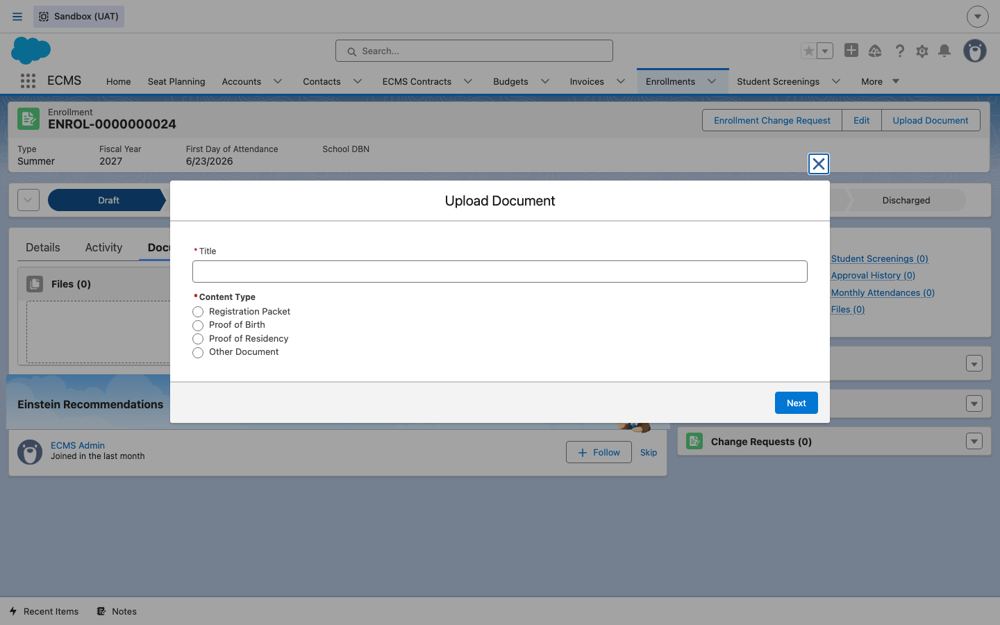
11Admit Code is auto-assigned, not entered
DO Open any enrollment that has been submitted at least once and look for the Admit Code field.
RESULT Per BRD D05.2 §3.4 (DOEECMS-2226), ECMS
auto-populates a non-editable Admit_Code__c field on ECMS_Enrollment__c the
first time the enrollment is submitted — there is no UI path for a user to set it manually:
- 58 — new child (no OSIS number)
- 56 — returning child from a prior school year (has an OSIS number)
- 54 — same-year transfer (has an OSIS number and another enrollment for the same year); a transfer enrollment can't be submitted while another enrollment is still active
ENROL-0000000001, ENROL-0000000002, and ENROL-0000000003 are all real UAT records with
Admit_Code__c = 58.
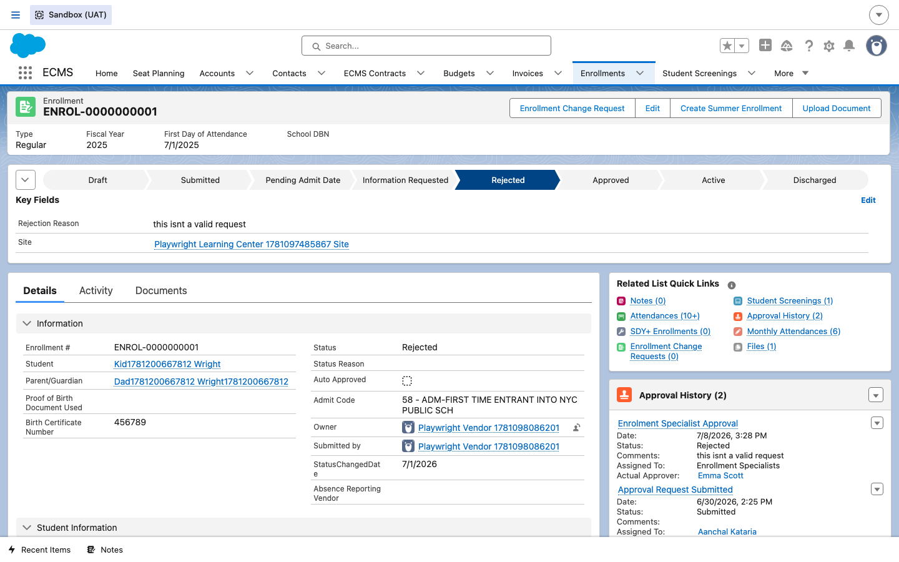
12ACCIS eligibility check on submission
DO Submit an EDY (Extended Day) enrollment for the first time.
RESULT Per BRD D05.2 §3.5 (DOEECMS-2250, "Verify Child Eligibility before Enrollment Submission"), the vendor is required to send an eligibility verification request to ACCIS from the enrollment UI, providing a case number and child number. A non-eligible response blocks the submission (§3.6, DOEECMS-2280) and shows the reason with a visual indicator on the record; an authorized internal Enrollment Specialist can override it. When ACCIS itself rejects the sync — as opposed to an eligibility determination — §3.7 (DOEECMS-2293) calls for a distinct status (e.g. "Pending ACCIS Posting for School Year" / "...for Summer") so the rejection can be triaged.
The ACCIS_Message__c field already exists on ECMS_Enrollment__c and is
populated on real records when ACCIS rejects a sync. ENROL-0000000732 is one such record.
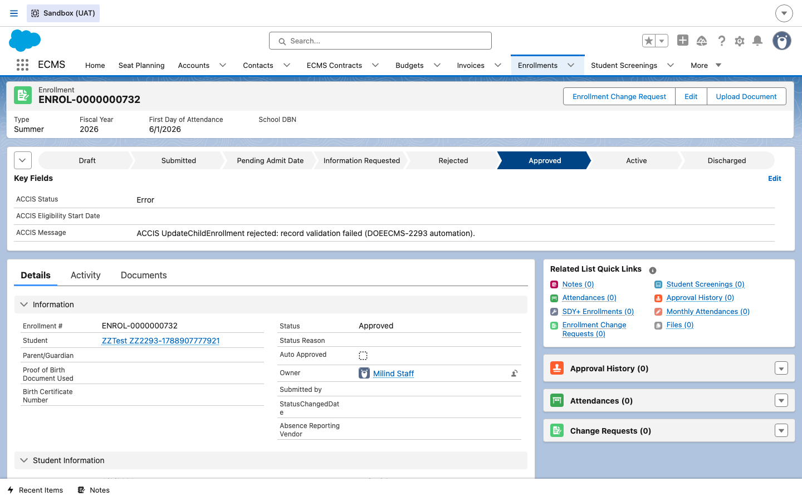
13Returning students can auto-approve
DO Submit a school-year enrollment for a student who was previously enrolled, approved, at the same provider/location, with unchanged key details.
RESULT Per BRD D05.2 §3.8 (DOEECMS-2239), ECMS auto-approves the enrollment without an Enrollment Specialist review — but only if every one of these holds; any mismatch routes it to the manual review queue instead:
- Same program and provider/location as the student's prior (summer and/or school year) enrollment
- The student's most recent enrollment was approved, with matching First Name, Last Name, DOB, and Gender
- The address on the new enrollment matches the address on the prior approved enrollment
Per §3.9 (DOEECMS-2240), a non-editable Auto_Approved__c Boolean
field shows the result — set automatically at approval time, with no manual check/uncheck available
to any user. ENROL-0000000040, ENROL-0000000041, and ENROL-0000000050 are real UAT records with
Auto_Approved__c = true.
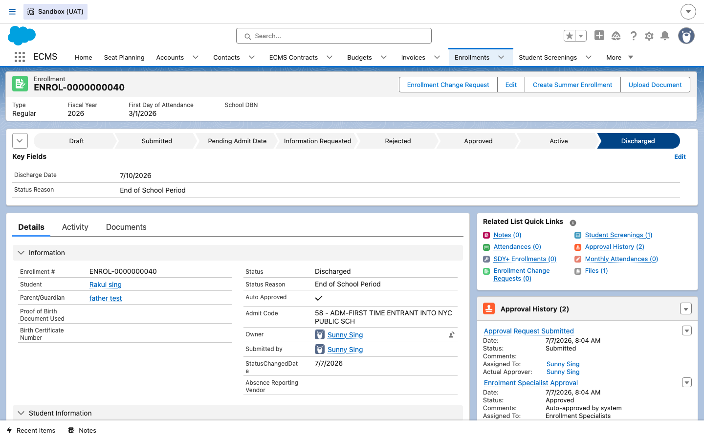
14Edit is available on every status — with limits
DO From the vendor portal, open any enrollment regardless of status (illustrated here on the Active enrollment ENROL-0000000521, Jamal Brooks) and click Edit.
RESULT Per BRD D05.2 §3.10 (DOEECMS-2227), the Edit button itself is meant to be shown for every enrollment status, letting vendors attach documents and update only the Student Residence Information and Primary Caregiver Information sections — key student/parent identity fields synced from OASIS stay locked, except address, which if changed is meant to be sent back to OASIS to keep the systems in sync.
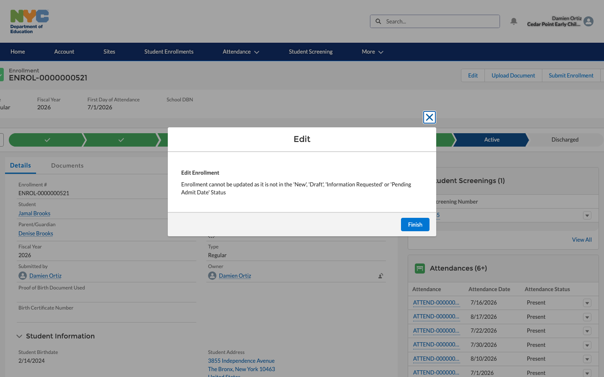
15Change requests: one mechanism, four record types
DO On an Approved or Active enrollment, click Enrollment Change Request.
RESULT Per BRD D05.2 §3.11 (DOEECMS-2243), this
is a general-purpose mechanism on ECMS_Enrollment_Change_Request__c, confirmed live in the
org with four record types — not only the Discharge variant covered in Guide 10:
- Class Change
- Discharge Request
- Seat Type Change
- Program Type Change
The button only appears on Approved/Active enrollments, and ECMS validates the requested effective date isn't before the admit date, first day of school, or the last effective change date. A submission that changes nothing is rejected with the message: "Please review your request again— the request you submitted has not modified the Program Type, Seat Type and Class Code in the child's current enrollment record." ENROL-CR-00000007 (Seat Type Change) and ENROL-CR-00000009 (Program Type Change) are real, Approved, non-Discharge examples.
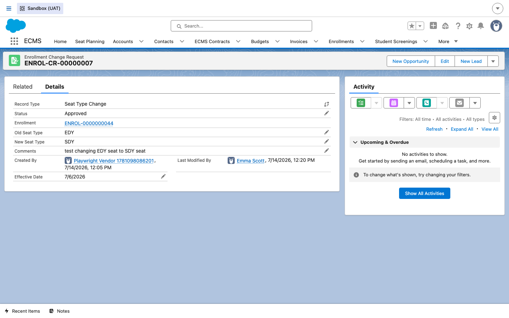